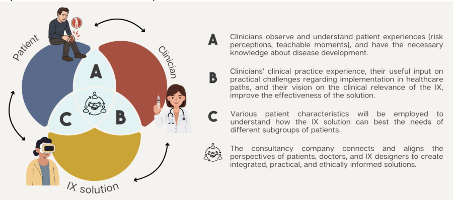
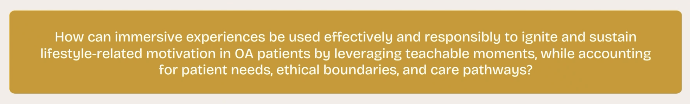
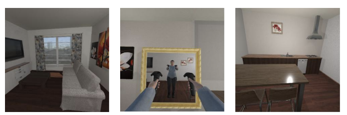

Project
VRxOA: immersive experiences bij artrose
VRxOA is een toegekend onderzoeksproject over de vraag of immersive experiences, zoals virtual reality, teachable moments rond artrose en leefstijl zorgvuldig kunnen versterken. Het project start half augustus 2026 en richt zich op onderzoek en ontwerpprincipes, nog niet op een beschikbare patiënttoepassing.
Mijn rol
Klinische inbreng vanuit ETZ
Ik ben mede-initiatiefnemer van VRxOA en ben betrokken vanuit de orthopedische praktijk. Tijdens de WeCare-kennismakingsrondes in het ETZ maakte ik kennis met Nadine van der Waal. Vanuit die gesprekken konden we een team vormen rond gedragswetenschap, kliniek en IX-ontwikkeling, en hebben we artrosepatiënten gekozen als eerste doelgroep voor dit onderzoek.
Status
Subsidie toegekend, start half augustus
De NGF-CIIIC Start-subsidie is toegekend. Het project gaat half augustus 2026 van start.
Waarom dit project?
Bij artrose kunnen pijn, conditie, gewicht, belastbaarheid en dagelijks bewegen elkaar beïnvloeden. Een consult of een duidelijke verandering in klachten kan soms een moment zijn waarop iemand scherper ziet dat verandering nodig of wenselijk is. In de literatuur wordt zo'n moment vaak een teachable moment genoemd.
Zulke momenten leiden niet automatisch tot blijvende verandering. Daarom onderzoeken we of immersive experiences kunnen helpen om risico's, doelen of toekomstige situaties concreter te maken, zonder patiënten te sturen, te beschamen of onnodig ongerust te maken.
Onderzoeksvraag
De centrale vraag is hoe immersive experiences effectief en verantwoord kunnen worden gebruikt om leefstijlgerelateerde motivatie bij mensen met artrose te versterken, met aandacht voor patiëntbehoeften, ethische grenzen en bestaande zorgpaden.

Wat onderzoeken we?
We werken in twee stappen. Eerst onderzoeken we welke barrières, ondersteunende factoren en teachable moments mensen met artrose ervaren, en hoe zij aankijken tegen immersive experiences als mogelijke ondersteuning. Daarna vertalen we die inzichten naar ontwerpprincipes, randvoorwaarden en een route voor eventuele verdere ontwikkeling.
We gebruiken daarvoor interviews, focusgroepen, expertpanels en co-creatiesessies. We betrekken patiënten, onderzoekers, clinici en IX-ontwikkelaars. Het doel is niet om snel een app of VR-product te lanceren, maar om eerst te begrijpen wanneer zo'n ervaring kan helpen, voor wie, en onder welke voorwaarden.

Samenwerking
In dit project brengen we gedragswetenschap, klinische praktijk en IX-ontwikkeling bij elkaar. Tilburg University levert de wetenschappelijke en gedragskundige basis. ETZ brengt klinische praktijkervaring in vanuit artrosezorg, interne geneeskunde en diëtetiek. Wise Goat VR en DTT dragen bij aan de technische, ontwerpgerichte en implementatiegerichte vertaling.
Consortium
Onderzoek, kliniek en IX-ontwikkeling
Volgende stap
Vanaf half augustus 2026 starten we met kwalitatief onderzoek met patiënten en professionals. Daarna vertalen we de inzichten naar ontwerpprincipes en randvoorwaarden voor een mogelijke vervolgfase. Pas in een latere fase besluiten we of we een concrete interventie ontwikkelen en testen.
Bron: NGF-CIIIC Start-aanvraagformulier VRxOA, januari 2026, aangevuld met projectstatus juli 2026. Het aanvraagdocument is gebruikt als intern brondocument; budget en vertrouwelijke aanvraagdetails zijn niet overgenomen.